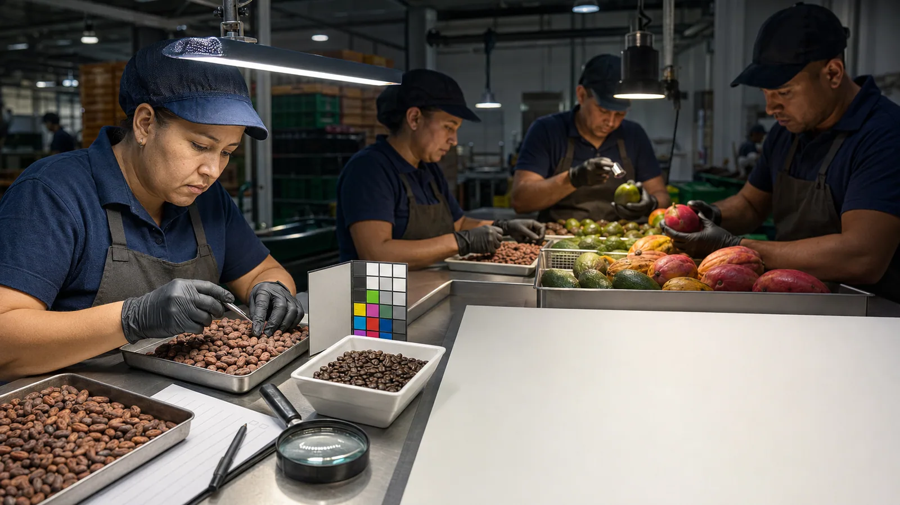

Conocer
Caracterizar áreas, actividades y tareas; evaluar condiciones y profundizar cuando el problema lo exige.
Iluminación laboral
No medimos puntos aislados. Evaluamos cómo la luz interviene en las actividades, las tareas visuales, la seguridad, el confort y el desempeño.
Imagen conceptual aprobada · no corresponde a un proyecto real
Arquitectura del servicio
Caracterizar áreas, actividades y tareas; evaluar condiciones y profundizar cuando el problema lo exige.
Priorizar hallazgos, orientar decisiones y desarrollar diseño o acompañamiento cuando forma parte del alcance.
Integrar iluminación de emergencia desde el diagnóstico hasta la prueba y el dossier, según el módulo contratado.
Comprobar intervenciones y mantener trazabilidad mediante seguimiento programado.
Trabajo y tarea visual

Color, textura, defectos, contraste y ritmo del proceso cambian la pregunta técnica.
Imagen editorial conceptual. Representa una aplicación posible y no evidencia de un proyecto ejecutado por MVH.
Qué puede estudiar MVH
El alcance puede relacionar áreas, tareas visuales, planos de trabajo, superficies, horarios, iluminación natural y artificial, distribución, sombras, contrastes, deslumbramiento observable y condiciones de operación.
Claridad antes de contratar
No. La cantidad de posiciones se determina técnicamente durante la planeación y el trabajo de campo; la propuesta se estructura por alcance y carga real.
Sí, cuando el alcance incluye la evaluación integral, los hallazgos y las recomendaciones se organizan para apoyar la gestión del peligro y la toma de decisiones.
No de forma automática. Evaluación, diseño, implementación, certificación y dictamen son alcances diferentes y deben contratarse expresamente.
Siguiente paso
Una orientación inicial ayuda a identificar la información necesaria y el servicio pertinente.